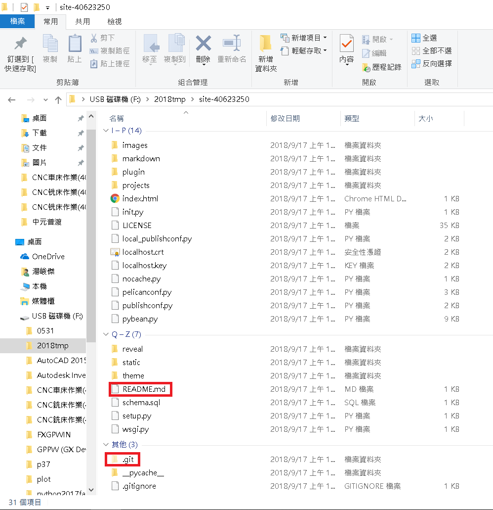
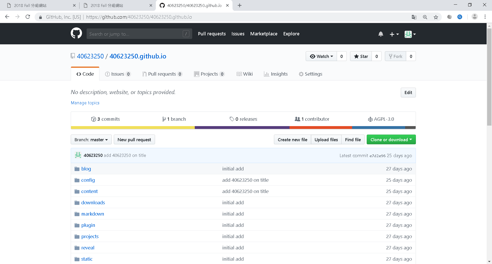

step1:建立一個新的倉庫,名字為自己的學號.github.io,權限設為公開
step2:clone新的倉庫的網址,資料夾名字取為40623250,按Enter
git clone https://github.com/40623250/40623250.github.io
step3:切記.git和README.md不能複製外,其餘都複製到自己的資料夾
step4:先看自己的狀態然後增加,再提交,推送的名稱為initial add
step5:設定自己提交的email和name
step6:開啟進端https://localhost:8443進去修改網誌名稱為:2018 Fall 40623250 分組網站
step7:在重複step4的步驟,在git push上傳
影片:
心得:這學期老師說延續上學期使用的github做，所以感覺學起來就不會很吃力，但這學期多學了個名叫''Onshape''這套軟件，它是一個能在網路上直接畫圖的軟體，在我使用上沒什麼問題，只差在要看得懂英文，老師引用把餐廳的食物(Onshape)吃下去，甚至做得更好吃(學習)，讓我覺得有所進步。